SinGAN: One Image, Three Frozen Scales
Abstract
Generate new images from one training image by learning its patches at several resolutions. A coarse random image supplies structure; finer residual generators add detail while all completed lower scales stay frozen. This compact native C++ experiment uses16,24 and32-pixel scales,371 generator and297 discriminator values per scale, least-squares games and fixed-noise reconstruction. Worked checks precede the real CIFAR image. The complete program exposes every noise seed, both warm-start groups, cold Adam states and288 critic-then-fresh-generator writes. Three fixed epochs per scale reproduce the original arrays and PNGs exactly. Reconstruction MSE is.1290 and sample pixel variance.006276; neither is held-out accuracy or evidence of realistic generation.
Learn local patches from one image at several resolutions
[Rott Shaham, Dekel and Michaeli, SinGAN: Learning a Generative Model from a Single Natural Image (ICCV2019)](https://arxiv.org/abs/1905.01164) uses a pyramid of fully convolutional generators and patch discriminators. This source teaching variant preserves its coarse-to-fine idea but uses three width4 networks, three biased convolutions per network and LSGAN losses instead of the paper's WGAN-GP. It is a small from-scratch experiment, without pretrained weights, normalization, dropout, generator weight EMA or a held-out image set.
At scale k, upsample the frozen lower-scale draw to p, draw explicit noise z, and form u=p+a_k z. The generator predicts a bounded correction but the image itself is not bounded:
Each3x3 SAME stride1 convolution has a bias and a fan-in uniform kernel. Widths3→4→4→3 give371 G values in6 leaves. D uses3→4→4→1 and two leaky activations, giving297 values in6 leaves. D has raw local scores and nominal7x7 receptive fields, with zero padding at boundaries. There is no global pooling or probability transform. Fixed-width computation is O(NHW) at each scale.
#include <dm/dm.hpp>
int main() {
std::filesystem::create_directories("build");
dm::graphics::Diagram d(42, 1500);
dm::graphics::DiagramNodeStyle s;
s.width=9; s.height=4.6; s.font_size=36;
d.node("z0",{-14,8},"Shared RGB noise\nAmplitude 1",s)
.node("z1",{0,8},"RGB noise\nFixed RMS amplitude",s)
.node("z2",{14,8},"RGB noise\nFixed RMS amplitude",s)
.node("g0",{-14,0},"Scale 0: 16x16\nFreeze after fitting",s)
.node("g1",{0,0},"Scale 1: 24x24\nFreeze after fitting",s)
.node("g2",{14,0},"Scale 2: 32x32\nPrevious + residual",s)
.node("rec",{0,-8},"Fixed reconstruction chain\nNoise only at scale 0",s)
.edge("z0","g0").edge("z1","g1").edge("z2","g2")
.edge("g0","g1").edge("g1","g2")
.edge("g0","rec").edge("rec","g2")
.save_svg("build/sig_method.svg");
}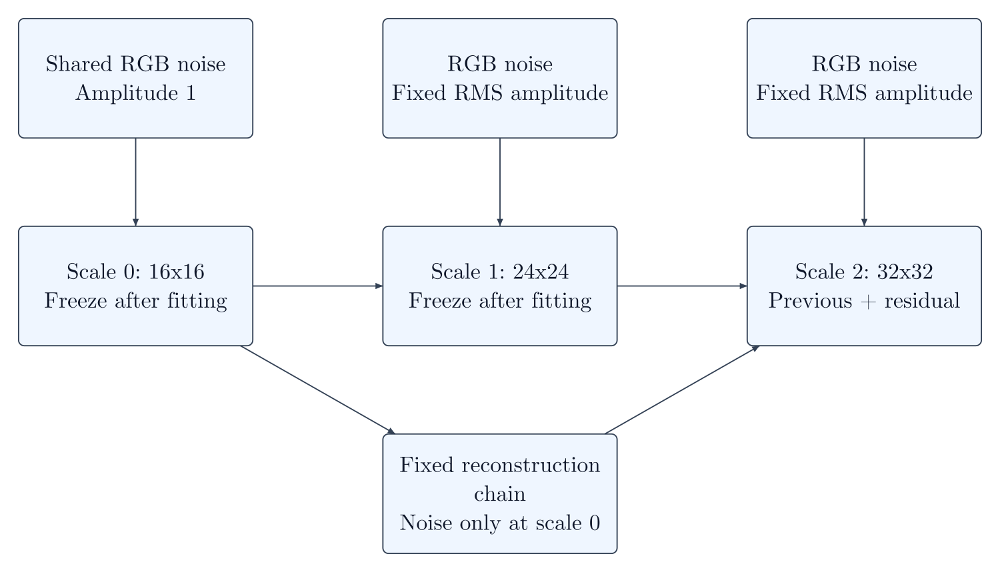
Hand-check the residual, shared RGB noise and amplitude
For p=2 and residual logit(-1,0,1), adding tanh gives approximately (1.2384,2,2.7616): a bounded correction does not clamp the previous image. The derivative with respect to p includes the identity skip as well as the convolution path. At zero amplitude the image cannot depend on the supplied noise.
Source coarse noise draws one Gaussian value per pixel and repeats it across RGB. Finer noise draws all RGB coordinates in one contiguous stream. The native sampler uses local raw MT19937 words with midpoint uniforms and Box-Muller, then casts once to Float32. It never consumes a global RNG stream.
Higher-scale amplitudes are measured once from the frozen fixed reconstruction:
The measurement stops both image gradients and returns[1], preserving the source scalar convention. The generator separately accepts a live scalar or[1] amplitude, so callers may differentiate an explicitly supplied amplitude.
#include <dm/dm.hpp>
int main() {
namespace n=dm::nn; auto t=n::DType::Float64;
auto p=n::full({3},2,t), residual=n::tanh(n::tensor({-1.,0.,1.},{3},t));
auto image=p+residual;
auto coarse=n::models::SingleImageNoise(1,1,2,true,7411);
auto a=n::models::SingleImageAmplitude(n::ones({1,2,3,3}),n::zeros({1,2,3,3}));
if(a.requires_grad() || std::abs(a.item()-.1)>1e-8) throw std::runtime_error("RMS amplitude");
auto plot=dm::graphics::RPlot::create();
plot.lines({0,1,2},p.to_vector<double>(),"Previous",{37,99,235})
.lines({0,1,2},image.to_vector<double>(),"Add tanh",{220,38,38})
.points({0,1,2},residual.to_vector<double>(),"Correction",{22,163,74},5)
.y_limits(-1.1,3.6).x_label("Supplied residual logits -1, 0, 1")
.y_label("Signed value").title("A bounded correction leaves the image unbounded")
.save_svg("build/sig_residual_toy.svg");
std::print("Shared RGB bank: {}\nDetached RMS amplitude: {}\n",coarse.values_str(),a.item());
}Shared RGB bank: [[[[-0.0899818, -0.0899818, -0.0899818], [0.444121, 0.444121, 0.444121]]]] Detached RMS amplitude: 0.10000000149011612
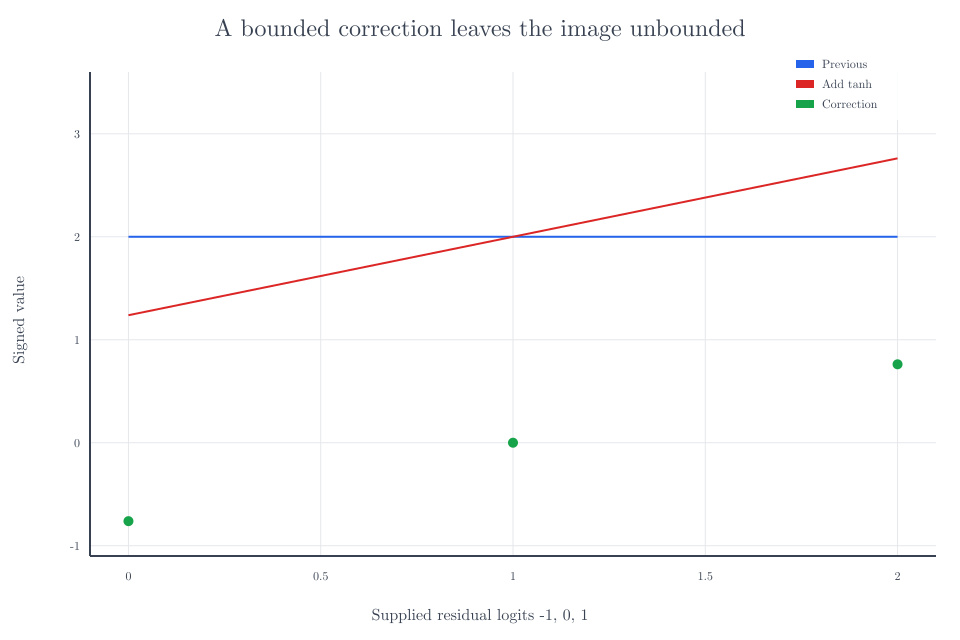
Keep the loss factors and both generator branches explicit
Let R=D(x), F=D(G(p,z,a)) and q=G(p_rec,z_rec,a). Each score pool has its own mean; random and real row counts may differ. The source game is
Both G calls share all weights. D receives only an image, not a target, noise or amplitude. There is no half on G's adversarial term. Thus dL_D/dF_j=F_j/M, while the adversarial dL_G/dF_j=2(F_j-1)/M. Reconstruction contributes 20(q_i-x_i)/(N_real*H*W*3) through the second use of G. Its lower reconstruction is frozen; the current generator remains differentiable on both branches. With R=(0,2), F=(-1,1), and residual reconstruction errors(2,-2), D=1 and G=42.
#include <dm/dm.hpp>
int main() {
namespace n=dm::nn; auto t=n::DType::Float64;
auto r=n::tensor({0.,2.},{2},t), f=n::tensor({-1.,1.},{2},t).requires_grad_();
auto e=n::tensor({2.,-2.},{2},t);
auto d=.5*(n::mean(n::square(r-1))+n::mean(n::square(f)));
auto g=n::mean(n::square(f-1))+10*n::mean(n::square(e));
n::GradOptions keep;keep.retain_graph=true;
auto dd=n::grad(d,{f},keep)[0],gg=n::grad(g,{f})[0];
if(d.item()!=1 || g.item()!=42) throw std::runtime_error("loss factors");
auto plot=dm::graphics::RPlot::create();
plot.points({-1,1},dd.to_vector<double>(),"D partial",{37,99,235},6)
.points({-1,1},gg.to_vector<double>(),"G partial",{220,38,38},6)
.y_limits(-2.4,1.5).x_label("Supplied fake patch score")
.y_label("Partial with respect to fake score").title("Half D and full G have different score partials")
.save_svg("build/sig_loss_toy.svg");
std::print("| Supplied scores | D | G including reconstruction |\n|---|---|---|\n| R=(0,2), F=(-1,1) | {} | {} |\n",d.item(),g.item());
}| Supplied scores | D | G including reconstruction |
|---|---|---|
| R=(0,2), F=(-1,1) | 1 | 42 |
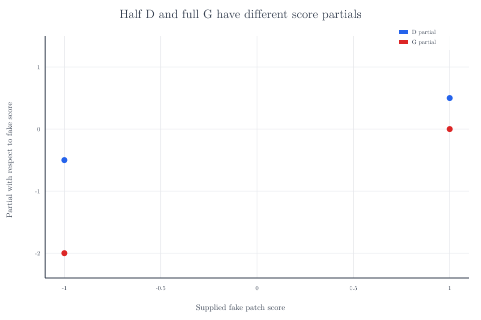
Trace the actual native generator and patch discriminator
The executed generator trace includes the input mixture and final previous-image skip. For the single-input plotting interface,105 previous coordinates,105 noise coordinates and one amplitude are packed into211 supplied coordinates, then sliced into the separate native arguments. All three actual inputs remain visible. The discriminator trace starts from RGB only. A5x7 rectangle makes the fully convolutional geometry visible; the real run later draws40x48 images.
#include <dm/dm.hpp>
int main() {
namespace n=dm::nn;namespace m=n::models;
n::ParameterStore g(7307);
auto z=m::SingleImageNoise(1,5,7,true,7411),a=n::ones({1});
n::Module model([&](const n::Tensor& packed) {
auto previous=n::reshape(n::slice(packed,{0,0},{1,105}),{1,5,7,3});
auto noise=n::reshape(n::slice(packed,{0,105},{1,105}),{1,5,7,3});
auto amplitude=n::reshape(n::slice(packed,{0,210},{1,1}),{1});
n::model_stage("Supplied previous RGB",packed,previous);
n::model_stage("Supplied noise RGB",packed,noise);
n::model_stage("Supplied amplitude",packed,amplitude);
auto o=m::SingleImageGenerate(g,previous,noise,amplitude);
n::model_stage("Previous + amplitude noise",std::vector<n::Tensor>{previous,noise,amplitude},o.input);
n::model_stage("Head3 to4 leaky",o.input,o.head);
n::model_stage("Body4 to4 leaky",o.head,o.body);
n::model_stage("Output4 to3 tanh",o.body,o.residual);
return n::model_stage("Previous + correction",std::vector<n::Tensor>{previous,o.residual},o.image);
},"One residual scale: signed RGB5x7");
n::ModelPlotOptions options;options.detail=n::ModelPlotDetail::Blocks;
options.sizing.minimum_extent=2;options.sizing.max_planes=4;
auto packed=n::concat({n::zeros({1,105}),n::reshape(z,{1,105}),n::reshape(a,{1,1})},1);
auto fig=model.plot(packed,options);
if(fig.parameter_count()!=371 || g.size()!=6) throw std::runtime_error("G census");
fig.save_svg("build/sig_generator.svg");
}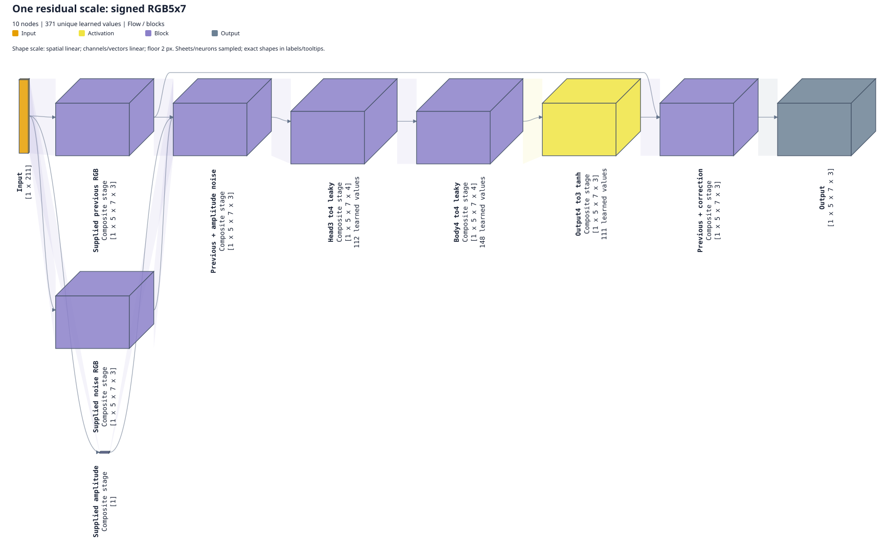
#include <dm/dm.hpp>
int main() {
namespace n=dm::nn;n::ParameterStore d(7309);
n::Module model([&](const n::Tensor& image) {
return n::models::SingleImageDiscriminate(d,image);
},"Image-only local critic: raw5x7 patches");
n::ModelPlotOptions options;options.detail=n::ModelPlotDetail::Layers;
options.sizing.minimum_extent=2;options.sizing.max_planes=4;
auto fig=model.plot(n::zeros({1,5,7,3}),options);
if(fig.parameter_count()!=297 || d.size()!=6) throw std::runtime_error("D census");
fig.save_svg("build/sig_discriminator.svg");
}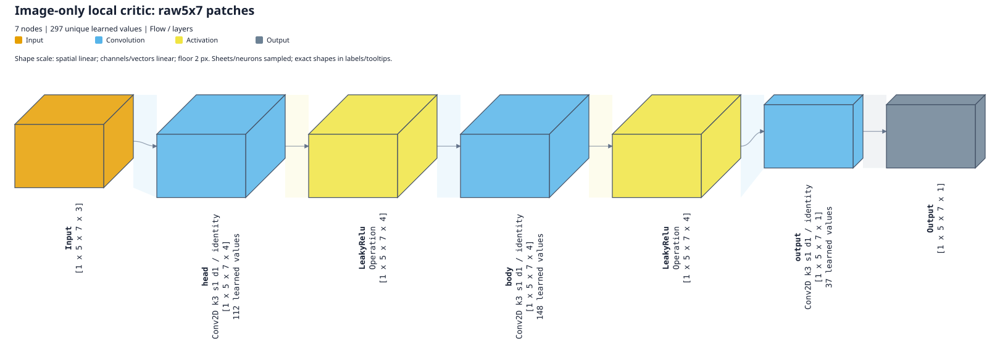
Fit one real CIFAR image with the complete three-scale program
Native dataset preparation obtains CIFAR-10 through the shared configurable cache. This run uses data_batch_1.bin row0 only. RGB bytes divide by255, then scale to [-1,1]. Targets16x16 and24x24 use native antialiased Keys bicubic, half-pixel coordinates and symmetric duplicated edges; target32x32 is the original image. Interpolation is signed and may overshoot; no clamp is inserted.
Fixed reconstruction noise is coarse shared RGB seed7411 and zero at both higher scales. Each scale has separate G7307/D7309 stores. Higher scales copy BOTH groups from the previous final checkpoint and create cold Adam(.0005,.5,.999, epsilon1e-8) states with clocks0/0. No optimizer history crosses a scale boundary. There are three epochs of16 steps per scale:48 D writes and48 G writes,288 total. The selected checkpoint is the fixed final epoch3; no selection or early stopping uses a test image. The first fitting batch is retained only for comparable logs.
For step t=0..47 at scale k, base seed is7501+10000k+307t. Each frozen lower generator receives base+97j noise; the current generator receives base+211. Lower random draws are refreshed at every fitting step. The fixed reconstruction and measured amplitude stay unchanged. Each batch takes D first, then a fresh G capture after the D write. No stale G capture is reused. Completed scales retain weights without optimizers. Explicit no-grad sampling freezes the lower chain; every saved phase also records all lower G/D weights to verify their immutability.
The complete editable program saves source-compatible arrays, all288 phase captures/counters, nine epoch records, checkpoints, three PNGs and scalar metrics. Named maps below only transport tensors and snapshots; all model/preparation, noise, amplitude, interpolation, objectives and optimizer arithmetic use the native API. Draw is the visible caller-owned pyramid schedule, including rectangular integer-truncated sizes. Source command-line init/epoch overrides are replaced here by the fixed documented default run.
#include <dm/dm.hpp>
namespace n = dm::nn;
namespace m = n::models;
using A = std::map<std::string, n::Tensor>;
using T = n::Tensor;
struct Scale {
n::ParameterStore g{7307}, d{7309};
std::unique_ptr<n::Optimizer> go, do_;
};
using Models = std::vector<std::unique_ptr<Scale>>;
const int sizes[3] = {16, 24, 32};
T Zero(int count, int h, int w) { return n::zeros({count, h, w, 3}); }
void Save(const std::filesystem::path& file, const A& a) {
n::NamedTensors values;
for (const auto& [key, value] : a) values.emplace_back(key, value);
n::save_npz(file.string(), values);
}
A Weights(const Scale& s) {
A out;
for (const auto& [prefix, store] :
std::vector<std::pair<std::string, const n::ParameterStore*>>{{"0/", &s.g}, {"1/", &s.d}})
for (const auto& name : store->names()) out.emplace(prefix + name, store->at(name).detach().clone());
return out;
}
bool Equal(const A& a, const A& b) {
if (a.size() != b.size()) return false;
for (const auto& [key, value] : a)
if (!b.count(key) || !n::equal_bits(value, b.at(key))) return false;
return true;
}
void Load(Scale& s, const A& values) {
for (const auto& [key, value] : values)
(key[0] == '0' ? s.g : s.d).set(key.substr(2), value.detach().clone());
}
A Forward(Scale& s, const A& b) {
auto o = m::SingleImageGan(s.g, s.d, b.at("image"), b.at("previous"), b.at("noise"),
b.at("rec_previous"), b.at("rec_noise"), b.at("amplitude"));
return {{"fake", o.fake}, {"reconstruction", o.reconstruction},
{"real_score", o.real_score}, {"fake_score", o.fake_score},
{"d_loss", o.d_loss}, {"g_loss", o.g_loss},
{"adversarial_loss", o.adversarial_loss}, {"reconstruction_loss", o.reconstruction_loss}};
}
A Partials(const n::ParameterStore& p, const std::vector<T>& gradient, int group) {
A out;
auto names = p.names();
for (std::size_t i = 0; i < names.size(); ++i)
out.emplace(std::to_string(group) + "/" + names[i], gradient[i]);
return out;
}
T Draw(Models& models, const std::vector<float>& amplitudes, const std::vector<T>& fixed,
int count, int rows, int seed, bool reconstruction = false, int height = 32,
int width = 32, A* capture = nullptr, int zero_scale = -1) {
n::NoGradGuard frozen;
T value = Zero(rows, height / 2, width / 2);
for (int k = 0; k < count; ++k) {
int h = k == 0 ? height / 2 : k == 1 ? height * 3 / 4 : height;
int w = k == 0 ? width / 2 : k == 1 ? width * 3 / 4 : width;
if (k) value = m::SRBicubic(value, h, w);
T z = reconstruction ? fixed[k] : m::SingleImageNoise(rows, h, w, k == 0, seed + 97 * k);
if (k == zero_scale) z = Zero(rows, h, w);
T previous = value;
value = m::SingleImageGenerate(models[k]->g, previous, z, n::full({1}, amplitudes[k])).image;
if (capture) {
auto prefix = "scale" + std::to_string(k) + "_";
capture->emplace(prefix + "noise", z);
capture->emplace(prefix + "previous", previous);
capture->emplace(prefix + "fake", value);
}
}
return value;
}
int main() {
const std::filesystem::path root = "build/singan";
std::filesystem::create_directories(root);
const auto data = dm::datasets::fetch("cifar10");
const auto source = n::data::LoadCifar({std::filesystem::path(data) / "data_batch_1.bin"}, n::data::Cifar::k10);
const T image = 2.0 * m::SRPairs(source.images, {0}).hr - 1.0;
A pyramid{{"source", image}};
std::vector<T> targets, fixed;
for (int k = 0; k < 3; ++k) {
targets.push_back(k == 2 ? image : m::SRBicubic(image, sizes[k], sizes[k]));
fixed.push_back(k ? Zero(1, sizes[k], sizes[k]) : m::SingleImageNoise(1, 16, 16, true, 7411));
pyramid.emplace("target" + std::to_string(k), targets.back());
pyramid.emplace("fixed_noise" + std::to_string(k), fixed.back());
}
Save(root / "data.npz", pyramid);
Models models;
std::vector<float> amplitudes;
std::ofstream history(root / "history.tsv"), steps(root / "steps.tsv");
history.precision(17);
history << "scale\tepoch\td_loss\tg_loss\tadversarial_loss\treconstruction_loss\n";
steps << "scale\tepoch\tstep\tseed\n";
auto started = std::chrono::steady_clock::now();
for (int k = 0; k < 3; ++k) {
const auto dir = root / ("scale" + std::to_string(k));
std::filesystem::create_directories(dir / "phases");
std::vector<A> lower;
for (const auto& s : models) lower.push_back(Weights(*s));
T prev_rec = k ? m::SRBicubic(Draw(models, amplitudes, fixed, k, 1, 0, true), sizes[k], sizes[k])
: Zero(1, 16, 16);
amplitudes.push_back(k ? float(m::SingleImageAmplitude(targets[k], prev_rec).item()) : 1.f);
models.push_back(std::make_unique<Scale>());
auto& model = *models.back();
{
n::NoGradGuard init;
T zero = Zero(1, 4, 4);
m::SingleImageDiscriminate(model.d, m::SingleImageGenerate(model.g, zero, zero, n::ones({1})).image);
}
if (model.g.count() != 371 || model.d.count() != 297) throw std::runtime_error("scale census");
if (k) Load(model, Weights(*models[k - 1])); // BOTH groups warm-start; no optimizer state copied.
n::OptimizerConfig cfg;
cfg.kind = n::OptimizerKind::Adam;
cfg.beta1 = .5; cfg.beta2 = .999; cfg.epsilon = 1e-8;
model.go = std::make_unique<n::Optimizer>(model.g, .0005, cfg);
model.do_ = std::make_unique<n::Optimizer>(model.d, .0005, cfg);
auto counters = [&](const std::filesystem::path& file) {
Save(file, {{"iterations", n::from_vector(std::vector<std::int64_t>{model.go->iterations(), model.do_->iterations()}, {2})}});
};
auto all_stores = [&]() {
A out;
for (std::size_t i = 0; i < models.size(); ++i)
for (const auto& [key, value] : Weights(*models[i]))
out.emplace("scale" + std::to_string(i) + "/" + key, value);
return out;
};
Save(dir / "initial_arrays.npz", Weights(model));
counters(dir / "probe-initial-counters.npz");
Save(dir / "probe-setup.npz", {{"previous_reconstruction", prev_rec}, {"amplitude", n::full({1}, amplitudes[k])}});
A diagnostic;
for (int epoch = 1; epoch <= 3; ++epoch) {
for (int step = 0; step < 16; ++step) {
int global = (epoch - 1) * 16 + step, seed = 7501 + 10000 * k + 307 * global;
T previous = k ? m::SRBicubic(Draw(models, amplitudes, fixed, k, 1, seed), sizes[k], sizes[k])
: Zero(1, 16, 16);
A batch{{"image", targets[k]}, {"previous", previous},
{"noise", m::SingleImageNoise(1, sizes[k], sizes[k], k == 0, seed + 211)},
{"rec_previous", prev_rec}, {"rec_noise", fixed[k]},
{"amplitude", n::full({1}, amplitudes[k])}};
Save(dir / ("probe-batch" + std::to_string(global) + "-input.npz"), batch);
if (!global) {
diagnostic = batch;
Save(dir / "probe-first-forward.npz", Forward(model, batch));
auto out = Forward(model, batch);
Save(dir / "probe-stale-g-gradient.npz", Partials(model.g, n::grad(out.at("g_loss"), model.g.parameters()), 0));
}
for (int group : {1, 0}) {
auto& store = group ? model.d : model.g;
auto& opt = group ? model.do_ : model.go;
A before = Weights(model);
auto out = Forward(model, batch); // Fresh G capture AFTER the D write, same explicit batch.
auto gradient = n::grad(out.at(group ? "d_loss" : "g_loss"), store.parameters());
std::string name = "batch" + std::to_string(global) + (group ? "-d" : "-g");
Save(dir / "phases" / (name + "-gradient.npz"), Partials(store, gradient, group));
opt->step(gradient);
A after = Weights(model);
for (const auto& [key, value] : before)
if (key[0] != char('0' + group) && !n::equal_bits(value, after.at(key)))
throw std::runtime_error("unselected owner changed");
Save(dir / "phases" / (name + "-after.npz"), all_stores());
counters(dir / "phases" / (name + "-iterations.npz"));
}
steps << k << '\t' << epoch << '\t' << global << '\t' << seed << '\n';
}
Save(dir / ("probe-epoch" + std::to_string(epoch) + ".npz"), Weights(model));
A out;
{ n::NoGradGuard evaluation; out = Forward(model, diagnostic); }
Save(dir / ("probe-epoch" + std::to_string(epoch) + "-forward.npz"), out);
history << k << '\t' << epoch;
for (auto key : {"d_loss", "g_loss", "adversarial_loss", "reconstruction_loss"}) history << '\t' << out.at(key).item();
history << '\n';
}
Save(dir / "final.npz", Weights(model));
for (int group = 0; group < 2; ++group) {
auto& store = group ? model.d : model.g;
auto out = Forward(model, diagnostic);
Save(dir / ("final_gradients_group" + std::to_string(group) + ".npz"),
Partials(store, n::grad(out.at(group ? "d_loss" : "g_loss"), store.parameters()), group));
}
{ n::NoGradGuard evaluation; Save(dir / "outputs.npz", Forward(model, diagnostic)); }
for (int i = 0; i < k; ++i)
if (!Equal(lower[i], Weights(*models[i]))) throw std::runtime_error("lower scale changed");
auto restored = std::make_unique<Scale>();
A saved;
for (auto& [key, value] : n::load_npz((dir / "final.npz").string())) saved.emplace(key, value);
Load(*restored, saved);
if (!Equal(Weights(model), Weights(*restored))) throw std::runtime_error("checkpoint restore");
{ n::NoGradGuard check;
auto expected = m::SingleImageGenerate(model.g, diagnostic.at("previous"), diagnostic.at("noise"), diagnostic.at("amplitude")).image;
auto actual = m::SingleImageGenerate(restored->g, diagnostic.at("previous"), diagnostic.at("noise"), diagnostic.at("amplitude")).image;
if (!n::equal_bits(expected, actual)) throw std::runtime_error("restored generation"); }
models.back() = std::move(restored); // Frozen scale retains weights only, no optimizer.
}
double seconds = std::chrono::duration<double>(std::chrono::steady_clock::now() - started).count();
std::vector<A> before;
for (const auto& s : models) before.push_back(Weights(*s));
A outputs;
T samples = Draw(models, amplitudes, fixed, 3, 12, 7901, false, 32, 32, &outputs);
Save(root / "samples.npz", outputs); outputs.clear();
T rectangular = Draw(models, amplitudes, fixed, 3, 4, 7919, false, 40, 48, &outputs);
Save(root / "rectangular.npz", outputs); outputs.clear();
T reconstruction = Draw(models, amplitudes, fixed, 3, 1, 0, true, 32, 32, &outputs);
Save(root / "reconstruction.npz", outputs); outputs.clear();
for (int k = 0; k < 3; ++k) {
T control = Draw(models, amplitudes, fixed, 3, 12, 7901, false, 32, 32, nullptr, k);
outputs.emplace("zero_noise_scale" + std::to_string(k), control);
if (n::max(n::abs(control - samples)).item() <= 1e-7) throw std::runtime_error("inactive noise level");
if (!Equal(before[k], Weights(*models[k]))) throw std::runtime_error("inference wrote weights");
}
Save(root / "noise_controls.npz", outputs);
n::save_image_grid(samples, (root / "samples.png").string(), 4, -1, 1, 0, 220 / 255., 4);
n::save_image_grid(rectangular, (root / "rectangular.png").string(), 2, -1, 1, 0, 220 / 255., 3);
n::save_image_grid(n::concat({image, reconstruction}, 0), (root / "reconstruction.png").string(), 2, -1, 1, 0, 220 / 255., 6);
T s64 = n::cast(samples, n::DType::Float64);
double mse = n::mean(n::square(n::cast(reconstruction, n::DType::Float64) - n::cast(image, n::DType::Float64))).item();
double diversity = n::mean(n::square(s64 - n::mean(s64, {0}, true))).item();
Save(root / "amplitudes.npz", {{"amplitudes", n::from_vector(amplitudes, {3})}});
std::ofstream meta(root / "metrics.json"); meta.precision(17);
meta << "{\"epochs_per_scale\":3,\"scales\":3,\"parameters_per_scale\":668,\"steps_per_group_per_scale\":48,\"total_optimizer_updates\":288,\"amplitudes\":["
<< amplitudes[0] << ',' << amplitudes[1] << ',' << amplitudes[2]
<< "],\"training_image_reconstruction_mse\":" << mse << ",\"sample_pixel_variance\":" << diversity
<< ",\"heldout_accuracy\":false,\"selected_epoch_fixed_final\":3,\"training_seconds\":" << seconds << "}\n";
if (!meta || !history || !steps) throw std::runtime_error("incomplete records");
std::print("| Single-image result | Native value |\n|---|---|\n| Reconstruction MSE | {} |\n| Sample pixel variance | {} |\n| Scale amplitudes | {}, {}, {} |\n| Optimizer writes | 288 |\n| Held-out accuracy | Not measured |\n",
mse, diversity, amplitudes[0], amplitudes[1], amplitudes[2]);
}| Single-image result | Native value |
|---|---|
| Reconstruction MSE | 0.12900455451447201 |
| Sample pixel variance | 0.006276356992872704 |
| Scale amplitudes | 1, 0.040693864, 0.036635347 |
| Optimizer writes | 288 |
| Held-out accuracy | Not measured |
Inspect the image pyramid and the fixed final samples
All RGB galleries use the same explicit display range[-1,1], nearest enlargement and no gaps. Display clipping changes PNG values only; model arrays and losses use signed raw output. The samples are visibly weak after this very small budget. Twelve random images share no hidden class or target-image conditioning.
#include <dm/dm.hpp>
int main() {
namespace n=dm::nn;std::map<std::string,n::Tensor> a;
for(auto& [key,value]:n::load_npz("build/singan/data.npz"))a.emplace(key,value);
std::vector<n::Tensor> tiles;
for(int k=0;k<3;++k)tiles.push_back(k==2?a.at("target2"):n::models::SRBicubic(a.at("target"+std::to_string(k)),32,32));
n::save_image_grid(n::concat(tiles,0),"build/sig_pyramid.png",3,-1,1,0,0,5);
}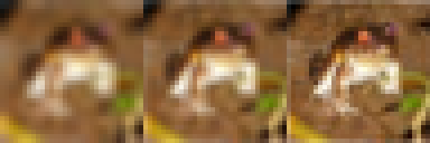
#include <dm/dm.hpp>
int main(){std::filesystem::copy_file("build/singan/samples.png","build/sig_samples.png",std::filesystem::copy_options::overwrite_existing);}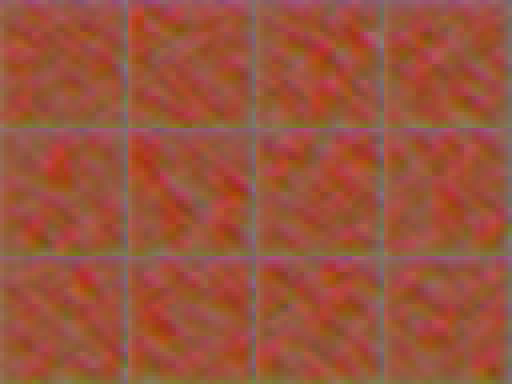
#include <dm/dm.hpp>
int main(){std::filesystem::copy_file("build/singan/rectangular.png","build/sig_rectangular.png",std::filesystem::copy_options::overwrite_existing);}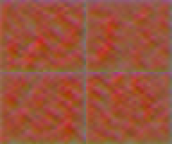
#include <dm/dm.hpp>
int main(){std::filesystem::copy_file("build/singan/reconstruction.png","build/sig_reconstruction.png",std::filesystem::copy_options::overwrite_existing);}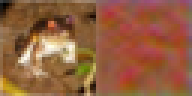
Read all epoch diagnostics and the fixed noise amplitudes
Every curve evaluates the same first batch of its scale after an epoch. These are diagnostics on the one training image and fixed random/reconstruction inputs, not comparable validation trajectories from independent datasets. Each scale changes target resolution and starts from warm weights with cold moments. G loss includes10 times reconstruction MSE and the full adversarial term.
#include <dm/dm.hpp>
int main() {
namespace n=dm::nn;
auto layout=dm::graphics::RLayout::create(1,2);
auto left=dm::graphics::RPlot::create(),right=dm::graphics::RPlot::create();
std::vector<dm::graphics::RGB> colours{{37,99,235},{220,38,38},{22,163,74}};
for(int k=0;k<3;++k){
std::vector<double> d,g,rec;
for(int e=1;e<=3;++e){
std::map<std::string,n::Tensor> a;
for(auto& [key,value]:n::load_npz("build/singan/scale"+std::to_string(k)+"/probe-epoch"+std::to_string(e)+"-forward.npz"))a.emplace(key,value);
d.push_back(a.at("d_loss").item());g.push_back(a.at("g_loss").item());rec.push_back(a.at("reconstruction_loss").item());
}
left.lines({1,2,3},g,"G scale "+std::to_string(k),colours[k]);
right.lines({1,2,3},rec,"Scale "+std::to_string(k),colours[k]);
}
left.y_limits(0,3.8).x_label("Epoch at this scale").y_label("G: adversarial + 10 MSE").title("First-batch generator diagnostic");
right.y_limits(.10,.25).x_label("Epoch at this scale").y_label("Signed RGB MSE").title("Fixed-noise reconstruction diagnostic");
layout.add(left).add(right).size(1100,480).fit_panels().save_svg("build/sig_history.svg");
}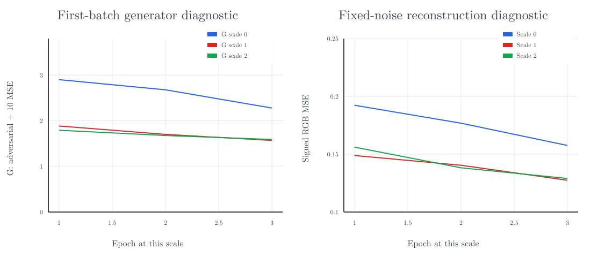
#include <dm/dm.hpp>
int main() {
namespace n=dm::nn;
auto a=n::load_npz("build/singan/amplitudes.npz")[0].second.to_vector<double>();
auto p=dm::graphics::RPlot::create();
p.points({0,1,2},a,"Fixed amplitude",{37,99,235},6).y_limits(0,1.3)
.x_label("Scale: 16, 24, 32 pixels").y_label("Noise multiplier")
.title("One coarse amplitude and two frozen RMS measurements").save_svg("build/sig_amplitudes.svg");
std::print("| Scale | Amplitude |\n|---|---|\n| 0 | {} |\n| 1 | {} |\n| 2 | {} |\n",a[0],a[1],a[2]);
}| Scale | Amplitude |
|---|---|
| 0 | 1 |
| 1 | 0.04069386422634125 |
| 2 | 0.036635346710681915 |

Remove one noise level at a time and check the limits
For each control, preserve the other two noise banks and all weights, but set one scale's random noise to zero. Each level changes the final raw RGB samples. That establishes an active path, not semantic diversity or perceptual quality. The sample pixel variance.006276 is the average squared difference from the 12-sample per-coordinate mean. It is neither a distribution metric nor an accuracy measure. Reconstruction MSE.1290 is on the sole training image.
#include <dm/dm.hpp>
int main() {
namespace n=dm::nn;std::map<std::string,n::Tensor> controls,samples;
for(auto& [key,value]:n::load_npz("build/singan/noise_controls.npz"))controls.emplace(key,value);
for(auto& [key,value]:n::load_npz("build/singan/samples.npz"))samples.emplace(key,value);
std::vector<double> rms,maximum;
for(int k=0;k<3;++k){
auto delta=n::cast(controls.at("zero_noise_scale"+std::to_string(k)),n::DType::Float64)-n::cast(samples.at("scale2_fake"),n::DType::Float64);
rms.push_back(n::sqrt(n::mean(n::square(delta))).item());maximum.push_back(n::max(n::abs(delta)).item());
if(maximum.back()<=1e-7)throw std::runtime_error("inactive noise control");
}
auto p=dm::graphics::RPlot::create();
p.points({0,1,2},rms,"RMS change",{37,99,235},6).points({0,1,2},maximum,"Max change",{220,38,38},6)
.y_limits(0,1.5).x_label("Only this scale receives zero noise").y_label("Change in final raw RGB")
.title("All three noise levels affect the final image").save_svg("build/sig_noise_controls.svg");
std::print("| Zero noise at scale | RMS change | Maximum change |\n|---|---|---|\n");
for(int k=0;k<3;++k)std::print("| {} | {} | {} |\n",k,rms[k],maximum[k]);
}| Zero noise at scale | RMS change | Maximum change |
|---|---|---|
| 0 | 0.1588250151747743 | 0.5294269323348999 |
| 1 | 0.006331493640654826 | 0.029589533805847168 |
| 2 | 0.003972299913153774 | 0.01915520429611206 |
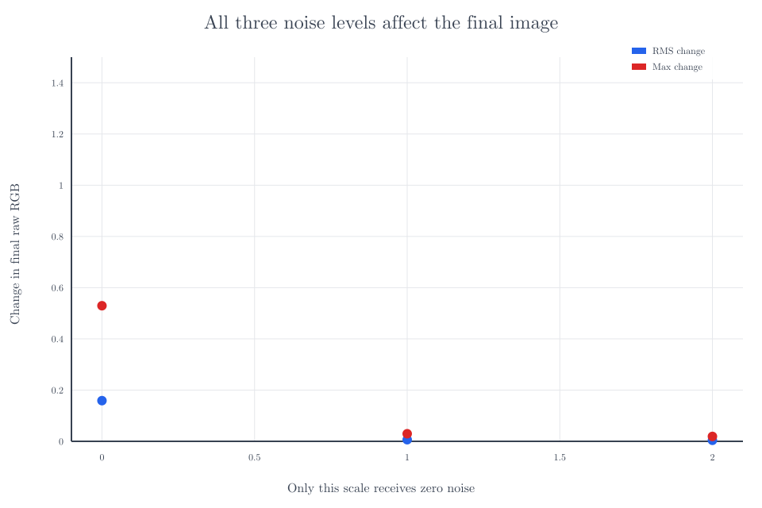
The optional independent NumPy oracle checks all99,309 captured parameter partials,102 scalar finite differences,800,156 forward values and all288 Adam writes. It verifies both warm-start groups, cold clocks, every frozen lower sample, source noise streams, all nine history rows and every inference control. The native API reproduces all21 original archives/488,107 values and all1,038 instrumented archives/1,890,142 values byte-for-byte. These are migration checks; the report itself fetches inputs, computes the model and fits through datamunge.
This experiment demonstrates explicit coarse-to-fine optimization and rectangular fully convolutional reuse. Its fixed small networks and short budget leave weak images and appreciable training reconstruction error. No independent-image generalization, realism score or full-paper performance is claimed.